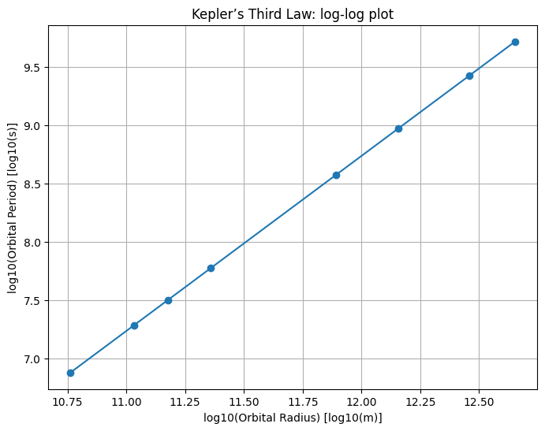
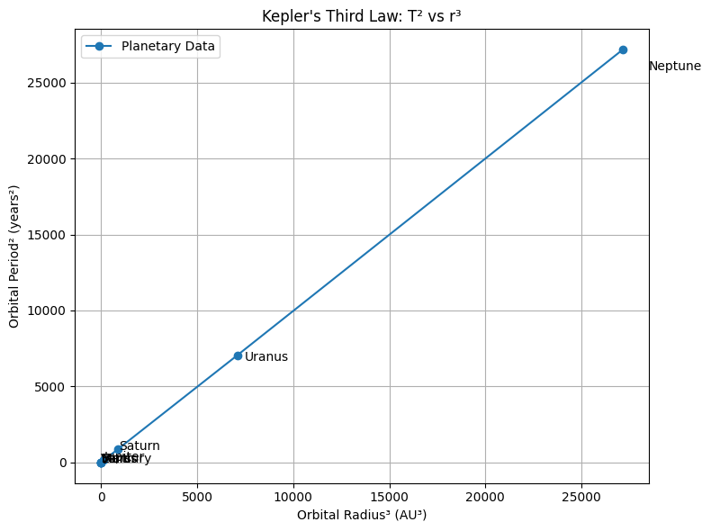
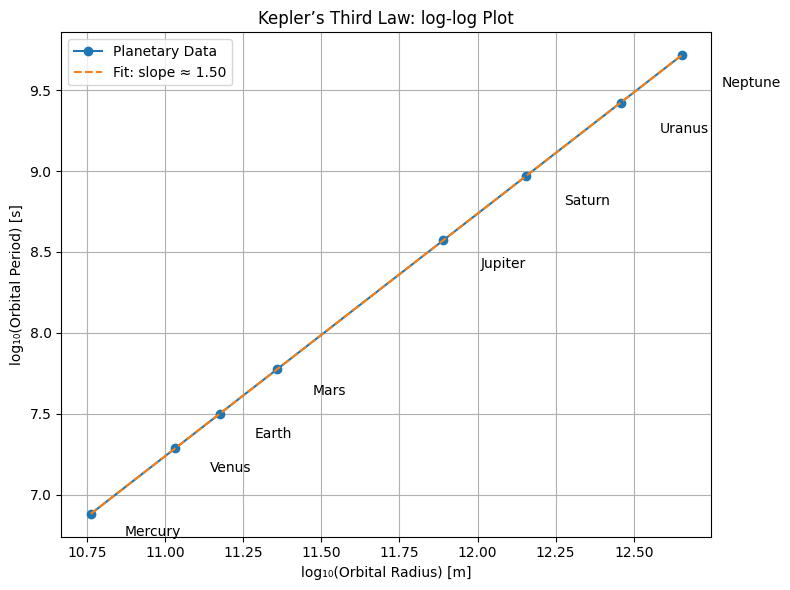

Problem 1
Kepler’s Third Law: Orbital Period and Orbital Radius
1. Theoretical Derivation
Kepler’s Third Law (Simplified for Circular Orbits)
For a body in a circular orbit around a much more massive body, the gravitational force provides the necessary centripetal force:
-
Gravitational Force:
\(F_{\text{gravity}} = \frac{G M m}{r^2}\) -
Centripetal Force:
\(F_{\text{centripetal}} = \frac{m v^2}{r}\)
Equating both forces:
Orbital period \(T\) is related to velocity \(v\) and radius \(r\):
Kepler’s Third Law:
\(T^2 \propto r^3\)
2. Astronomical Implications
-
Planetary Mass Determination:
If you know a moon's orbit (\(T\), \(r\)), you can calculate the mass of the planet using:
$$ M = \frac{4\pi^2 r^3}{G T^2} $$ -
Interplanetary Distance:
Comparing periods and distances of planets allows relative distances from the Sun to be calculated without direct measurements. -
Satellite Orbit Design:
Used to determine the correct altitude for geosynchronous orbits.
3. Real-World Examples
Example 1: The Moon Orbiting Earth
- Radius: \(r \approx 3.84 \times 10^8 \ \text{m}\)
- Period: \(T \approx 27.3 \ \text{days} \approx 2.36 \times 10^6 \ \text{s}\)
Using Kepler’s law, we can estimate Earth’s mass.
Example 2: Solar System Planets
By plotting \(\log(T)\) vs. \(\log(r)\) for planets, we should get a straight line with slope \(\approx 1.5\).
4. Computational Simulation
import numpy as np
import matplotlib.pyplot as plt
# Constants
G = 6.67430e-11 # Gravitational constant
M = 1.989e30 # Mass of the Sun (kg)
# Orbital radii (m) - approximate average values
radii = np.array([
5.79e10, # Mercury
1.08e11, # Venus
1.50e11, # Earth
2.28e11, # Mars
7.78e11, # Jupiter
1.43e12, # Saturn
2.87e12, # Uranus
4.50e12 # Neptune
])
# Compute periods using Kepler's Third Law
T = np.sqrt((4 * np.pi**2 * radii**3) / (G * M))
# Plot log(T) vs log(r)
plt.figure(figsize=(8,6))
plt.plot(np.log10(radii), np.log10(T), 'o-')
plt.xlabel("log10(Orbital Radius) [log10(m)]")
plt.ylabel("log10(Orbital Period) [log10(s)]")
plt.title("Kepler’s Third Law: log-log plot")
plt.grid(True)
plt.show()

5. Graphical Representation
A circular orbit simulation can be animated using matplotlib.animation.
Orbital period data from real planets supports the
\(T^2 \propto r^3\) relationship.
6. Extension to Elliptical Orbits
Kepler’s Third Law still applies if \(r\) is replaced with the semi-major axis \(a\).
For elliptical orbits:
This allows for broader applications, including comets, exoplanets, and binary stars.

